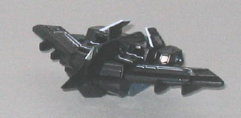
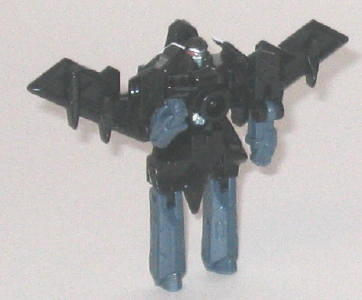
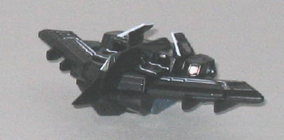
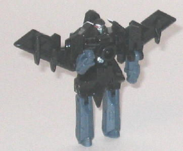
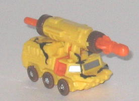
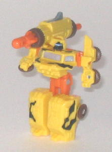

Razorclaw
Razorclaw
 
Allegiance : Decepticon, Minicon
Difficulty of Transformation : Very Easy
Color Scheme : Black, dark dull purplish blue, and some white, silver, and red
Individual Rating : 7.3
Razorclaw
vs. Steamhammer
Size
: Mini-Con (2-pack)
Overall Rating
: 6.7
 Razorclaw
Razorclaw


Allegiance
: Decepticon, Minicon
Difficulty of Transformation
: Very
Easy
Color Scheme
: Black, dark dull purplish
blue, and some white, silver, and red
Individual Rating
: 7.3
(NOTE: Because this toy is a repaint, this is not a full-blown review. This mainly covers any changes made to the toy and the color scheme, and merely compares it to Armada Thunderwing. For a review on the mold itself, read the review of Armada Thunderwing here .)
Razorclaw (presumably
named for his sharp ninja star weapon mode) has a color scheme that works
pretty well for a stealth bomber-- black and a dull blue work very well
for camoflauge colors if you're flying at night! However, having just dull
blue and black would make a somewhat uninteresting color scheme due to
the lack of contrast, so some nice white line paint apps have been added
to the vehicle mode to spice things up a little-- they look really nice.
A silver cockpit and head, as well as red optics, complete the color selection.
It adds a little more contrast to the robot mode, but this mode still looks
a little boring due to the lack of a really good contrasting color.
No mold changes have
been made to Razorclaw; however, a Decepticon symbol paint app has been
added to his left tail wing.
 Steamhammer
Steamhammer


Allegiance
: Autobot, Minicon
Difficulty of Transformation
: Very
Easy
Color Scheme
: Yellow, brown, orange,
and some black, silver, light green, and gray
Individual Rating
: 6.0
(NOTE: Because this toy is a repaint, this is not a full-blown review. This mainly covers any changes made to the toy and the color scheme, and merely compares it to Armada Knock Out. For a review on the mold itself, read the review of Armada Knock Out here .)
Steamhammer, to put it
bluntly, has a rather funky color scheme. The brown and orange, which are
secondary colors, go together fairly well, but the yellow used for the
main color is a rather odd color for a military vehicle. I mean, even a
dull yellow would've worked, but the "normal" yellow used is a bit too
bright for a serious vehicle like this, and the black "camoflauge" patterns
used on top of it would not only be completely ineffectual in real life,
but they look pretty hokey as well. One positive is that the robot face
has the optic visor painted, however, which is a nice detail on such a
small toy.
No mold changes have
been made to Steamhammer, but an Autobot symbol paint app has been added
to the left side of the rear of his vehicle mode. Due to mold degradation
from its many uses, the hinge that connects Steamhammer's upper body with
his lower body is a bit loose, so it tends to come off rather easily during
transformation. A little annoying, but it can easily be popped back on.
This Minicon pack, in terms of paint jobs, has one good paint job and one bad one. Razorclaw, though a bit dull in robot mode, has the best paint job of any version of the mold. However, Steamhammer has the worst paint job of his mold, with a clashy yellow/black "camoflauge" scheme. However, given the average score, unless you're a completist, you're probably better off buying the Armada versions of these molds instead.
Review by Beastbot